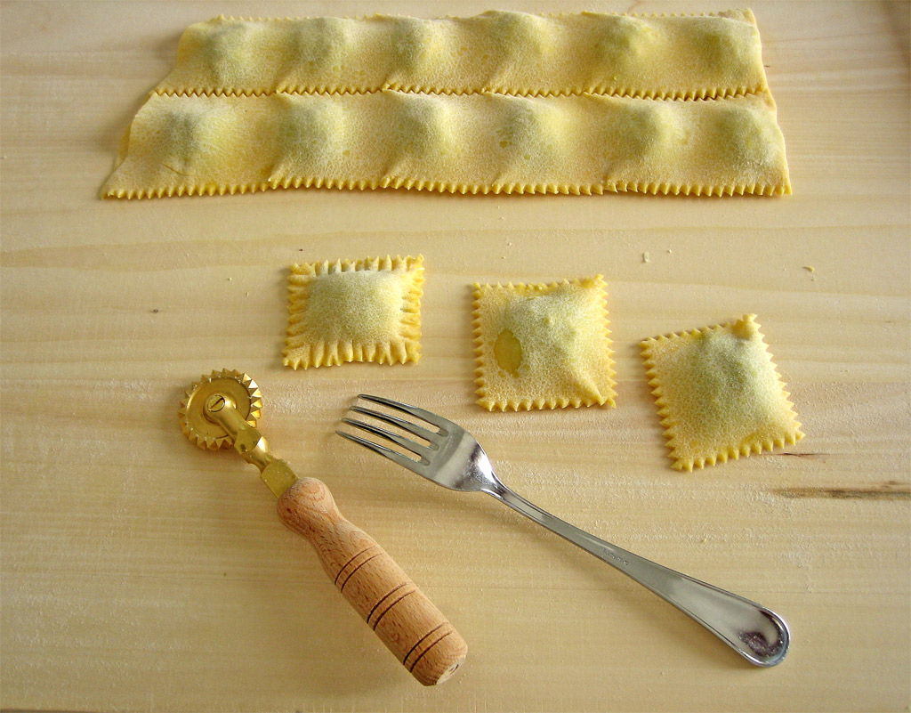

Ravioli

Description
Ravioli is an Italian dumpling that's typically stuffed with ricotta, meat, cheese, and vegetables. The filling is then sealed between two thin layers of egg pasta dough and typically served with a delicious tomato or cream-based pasta sauce.
Although this delectable Italian food is widely considered to be the main course, it can be also served as an appetizer or a side dish. Nowadays, the recipes for preparing deep fried ravioli and baked ravioli have garnered a lot of attention.
Ingredients
- 500g of pasta flour
- 1 pinch of salt
- 6 egg yolks, lightly beaten
- 4 eggs, lightly beaten
- 25ml of olive oil
Steps
- Sieve the flour and salt onto a large, clean work surface and create a mound
- Make a well in the middle and pour in the egg yolks, eggs. Mix slowly with clean hands to create a dough
- Knead for 5–10 minutes until it becomes smooth and elastic then form into a ball, wrap tightly in cling film and rest in the fridge for an hour
- Unwrap the dough and cut it into smaller portions (so it’s easier to work with); dust with flour and cover the rest with a tea towel
- Take a piece and flatten it between your hands until it’s the thickness of a pound coin then feed it through a pasta machine on the thickest setting. Fold the dough in half and pass it through the machine a few more times until the dough is smooth
- Once you have a smooth dough, gradually decrease the setting on the pasta machine, rolling the dough through twice on each setting until you achieve the desired thickness (do not fold in between rolling)